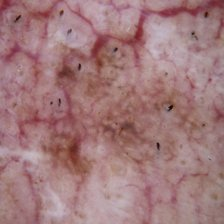
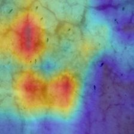
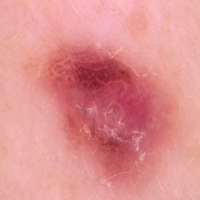
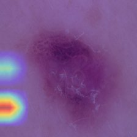

An image-plus-metadata classifier for benign vs. malignant skin lesions, evaluated honestly on 500 held-out cases the model never trained on.
A dermatologist doesn't just look at a lesion — they factor in the patient's age, sex, and where on the body it is. Melanoma risk climbs sharply with age; different lesion types cluster on different body sites. An image-only model throws that context away. This project asks whether adding it back — as a second, small encoder fused with the image features — measurably helps.
10,015 dermoscopy images across 7 diagnoses, collapsed to benign vs. malignant. The dataset has multiple photos of the same lesion — a naive random split can put near-duplicate images of one lesion in both train and test, quietly inflating every metric. This project splits by lesion ID first, 70/15/15, so no lesion crosses the train/val/test boundary.


P(malignant) = 1.00. The Grad-CAM heat sits on the lesion itself, not the surrounding skin — a sign the model is keying on the right region, not a background artifact.


This lesion was malignant. The model gave it P(malignant) = 0.00 — not a borderline call, a confident miss. Cases like this are why recall and error analysis matter more than a single accuracy number.
Each point is one of the 500 test lesions — its fused image+metadata vector, reduced to 2D with PCA. No clinical unit on the axes; they're just the two directions of largest variation in what the model learned.
The two colors mostly separate into their own regions — a sign the model learned a real decision boundary, not noise. The cases in the mixed middle are where it's least certain.
Malignant rate climbs from 18.2% under 30 to 74.5% at 75+ in this sample — exactly the epidemiological pattern that gives the metadata encoder something real to use.
Younger malignant lesions are rarer in this data and get caught less often — the harder case, not the common one.
Abdomen recall (20%, n=10 malignant) is the weakest reliable signal in the data — a real gap, not noise, though still a small sample.
Malignant recall is 85.2% for male patients versus 71.6% for female patients in this sample — a 14-point gap.
On average the model is more confident when it's right than when it's wrong — a sign of reasonable calibration. But of its 97 errors on this sample, 42 (43%) were confidently wrong, not borderline calls like the case two slides back.
All 500 test cases — image, Grad-CAM, prediction, and metadata — are browsable, filterable, sortable, and exportable.